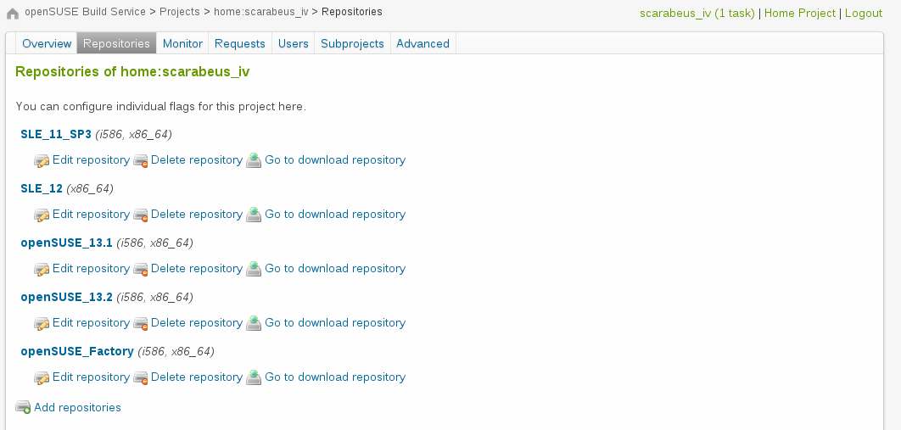

Important - Please use the waiting time
Prepare now
# open slides
xdg-open https://presentations.nordisch.org/pw2015/#/
# adapt for your installed distribution
zypper ar http://download.opensuse.org/repositories/openSUSE:/Tools/openSUSE_13.2/openSUSE:Tools.repo
zypper ref
zypper in --from openSUSE_Tools osc build
zypper in quilt spec-cleaner
# if you want to follow the code examples
osc co home:darix:pw2015
# need an account?
xdg-open https://bit.ly/opensuse_create_account
Packaging for Champions
the day ahead
- Overview and Introduction : Why
- Basic Packaging
- Packaging and Building with the Open Build Service
- Intermediate Packaging
- Advanced Packaging
- Collaboration and Communication
Today's Heroes
- Craig Gardner [@ganglia cgardner@suse.com]
- Marcus Rückert (aka darix) [http://nordisch.org]
- Tomáš Chvátal [tchvatal@suse.com]
- Lars Vogdt [lrupp@suse.com]
A little about Craig
- Linux user and admin since 1994 (Slackware)
- Started helping Novell move to Linux in 2000
- Became a SUSE and openSUSE Packager in 2006
- Joined SUSE in 2011 on the Build Team
A little about Lars
- Studied German and History in Brunswick to become a teacher
- 2 lovely kids (daughter & son) and a beautiful wife
- Running SUSE Linux since 2001
- Co-Developer of the GEE-Server (based on 6.4)
- Joined SUSE 2003 –> SUSE Schoolserver
- Team Lead openSUSE Education since 2006
- Team Lead SUSE Infrastructure Team since 08-2009
A little about Marcus
- S.u.S.E. user since 5.1
- With SuSE since 2005
- Packaging since about 11years
- Doing package reviews at SUSE and packager support for almost my whole time there
A little about Tomáš
- SUSE Employee since 2011
- Lead of Packagers team in SUSE
- Handle Libreoffice and Java related stuff in openSUSE
- Gentoo developer working on varous things there
Why are we doing this again?
The Idea Behind Packaging
- Why do we need packages at all?
- Software lifecycle
- Benefits to Users
- Benefits to Developers
- The Distribution
Why Packages? Why Packaging?
- Application
- Various users
- The Distribution
Packaging the Application
Packaging for Users
A wide variety
- Beginners
- Enthusiasts and Do-It-Yourselfers
- Developers and Engineers
- Enterprise
Packaging for The Distribution
- Consistency
- Visibility
- Viability
- Comprehensive solution(s)
Why Packaging?
The most effective way to get software solutions to usersWhat is Software?
A collection of files, and more
Who will use the software?
Know your user
And even if you don't, you can make educated guesses
Normal users versus Developers
The Distribution
We very much like openSUSE
But we want software solutions to be successful everywhere
Proper packaging can accommodate most distributions fairly
Q & A
Packager's workflow
How the hell can I get my package to all users?
This section displays some things done over web interface and some using CLI commands. Most of the operations are possible to do both ways
Have account yet?
Lets create it!

What did I get with the account?
- Own home project
home:<username> - Access to branching/maintenance requests
- cli interface and possiblity to build things localy
- account for bugzilla.opensuse.org
- and many many things more...
Home project overview

Repositories
Lets create some new package!
cd somewhere-on-the-disk-where-i-want-to-store-obs-content
$ osc checkout home:<username>
$ cd home:<username>
$ mkdir mypackage
$ cp various-things mypackage/
$ osc add mypackage
$ osc commit
$ osc results
But I wanted to build the package on my machine :-(
Fear not. We can do that too!
$ cd my-package-directory
$ osc build
# wait wait wait
Lovely, I have package.
What can I do with it now?
Overall the goal of our effort should be to get the package consumed by as many people as possible.
So lets explain this on the workflow diagram https://progress.opensuse.org/workflow/factory-proposal.html.
All this translates for developer to two tasks:
- Find suitable devel project
- Submit package from devel project to factory
$ osc sr home:<username> mypackage mydevelproject -m "My new cool package"
# wait wait wait
$ osc sr mydevelproject mypackage openSUSE:Factory
How about doing an update for existing package?
$ osc develproject openSUSE:Factory rsnapshot
Archiving
$ osc branch Archiving rsnapshot
A working copy of the branched package can be checked out with:
osc co home:scarabeus_iv:branches:Archiving/rsnapshot
$ osc co home:scarabeus_iv:branches:Archiving/rsnapshot
$ cd home:scarabeus_iv:branches:Archiving/rsnapshot
$ vi rsnapshot.spec # hackyhacky
$ osc vc
$ osc build
# wait wait wait
$ osc ci
$ osc results
$ osc sr -m "Got around to fix bnc#2345 so enjoy"
Patches and ChangeLog
- Version bump to 4.4.4 bnc#123456
* Feature 1
* Fix 12
+ long waited bugfix for feature XYZ
- fix segfault on load incorrect document (bnc#123456)
* foo-1.2.4-buffer-owerflow.patch
- remove obsolete patch:
* foo-1.2.3-buildfix.patch
Maintenance updates are not hard either
Why ought you bother with updating releases?
- Bugfixes should be sent to users sooner than in next openSUSE
- We need to keep the distribution secure by adding security fixes
- You could even consider adding feature updates if really desired
With maintenance you have multiple choices:
- Backport fixes to one product (ie. openSUSE-13.2)
- Backport fixes to all supported products (currently 13.1 and 13.2)
- Update all products with latest version of the package
$ osc maintained rsnapshot
openSUSE:13.1:Update/rsnapshot
openSUSE:13.2:Update/rsnapshot
$ osc mbranch rsnapshot
$ osc co home:scarabeus_iv:branches:OBS_Maintained:rsnapshot
$ vi rsnapshot.openSUSE_12.3_Update/rsnapshot.spec
$ vi rsnapshot.openSUSE_13.1_Update/rsnapshot.spec
$ osc vc -m "I did fancy maintenance changes, I am great bnc#something"
$ osc ci
$ osc mr -m "Maintenance update wrt bnc#something"
Sending latest version is bit easier
$ osc sr my:devel:project package openSUSE:13.2:Update
Q & A
Gimmme more
Intermediate topics
Spec file surgery
What should the file contain?
How can I alter it without failing miserably?
How does actually spec file look like?
Name: test
Version: 1
Release: 0
License: GPL-3.0
Summary: Testing package
Url: http://example.com
Group: some-group
Source: http://example.com/download/%{name}-%{version}.tar.xz
BuildRequires: patience-devel
Requires: patience-tools
%description
Hyperawesome test package
%prep
%setup -q
%build
%configure
make %{?_smp_mflags}
%install
make install DESTDIR=%{buildroot} %{?_smp_mflags}
%files
%defattr(-,root,root)
%doc ChangeLog README COPYING
Header section content dissection
First, the easy parts
- Name, Version, Summary, Url
- License - SPDX
- Source - with full URL path
- %description
BuildRequires
- Should contain what your package needs for build
- Prefferably it should be version limited (based ie on configure.ac)
- If something is amiss here the package should not build
Requires
- Used for Run-time dependencies
- Automatically populated for shared libraries
- Basically all your application needs to run ough to be there
- If wrong one will notice when using the application -> tricky and be careful
Requires - scriptlets
- Special case of require needed only for scriptlet not during runtime
- Used to request just something extra for the phase
- Alternatively also used to ensure something be installed
Requires specialities
- %requires_eq - for exactly same version requirement
- %requires_ge - Translates to >= on the requirement
Example
BuildRequires: libvisio-devel >= 1.2.3
BuildRequires: cmake(GLEW) < 2.0
BuildRequires: pkgconfig(X11) => 0.9
BuildRequires: python-imaging
Requires(post): update-alternatives
Requires: python-imaging
%requires_eq perl
Provides/Obsoletes/Conflicts
Conflicts
- Used to block installation of the conflicting packages
- All requiring packages should have the conflict on each other
Provides/Obsoletes
- Generally used to swap one package for another
- Provides/Obsoletes should be always versioned
- Do not obsolete unless 100% replacement
Example
Conflicts: libwriterperfect
Provides: liboldpackage = %{version}
Obsoletes: liboldpackage < %{version}
Provides: alternativepackage = %{version}
Scriptlets
Scriptlets are shell or lua scripts executed during various phases of the package install
They have different $1 values for update/newinstall/uninstall in various phases
- %pretrans - LUA only
- %pre
- %post
- %preun
- %postun
- %posttrans
Example
Requires(pre): update-aternatives
%pre
update-alternatives --install %{_javadir}/el_api.jar el_api \
%{_javadir}/%{name}-el-%{elspec}-api.jar 2030
Subpackages
Subpackages carry the syntax logic for the main spec package.
They have it's own provides/requires/scriptlets/files/etc., but buildrequires should be at main pkg for readability.
There are two types, appending name (ie. bla and bla-python) or completely renaming ones.
Example
%package python # generates bla-python
Summary: python bindings for bla
Group: some/group
%description python
The long awaited python bindings providing a, b, and c for bla
Libraries
Package libraries are bit of a special kind:
- They require to be subpackage named as the soname they provide
- Must run ldconfig after install and uninstall, updates count
- Should have proper soname data set
One should never ever consider packaging static library!
Example
%package -n libbla1
Summary: library for bla
Group: System/Libraries
%description -n libbla1
Shared library to operate with bla
%post -n libbla1 -p /sbin/ldconfig
%postun -n libbla1 -p /sbin/ldconfig
%files -n libbla1
%{_libdir}/libbla1.so.*
Can I haz more
Some advanced topics
Condition red?
Looks familiar?
%if 0%{?something}
do stuff
%else
do other stuff
%endif
Let's cast
%define suse_version 1320
#
# rpm casts that into a number
0%{?suse_version} => "01320" => 1320
0%{?something_undefined} => "0" => 0
#
# => anything > 0 is true
%if 0%{?suse_version}
#
# => any suse with version bigger than 13.2
%if 0%{?suse_version} >= 1320
#
# => anything before 13.2?
%if (0%{?suse_version} && 0%{?suse_version} <= 1320)Funky conditions!
Using systemd for all rpm based distros? No problem.%if 0%{?suse_version} > 1230 \
|| 0%{?rhel_version} > 600 \
|| 0%{?centos_version} > 600 \
|| 0%{?fedora_version} >= 20 \
|| 0%{?el7}%{?fc20}%{?fc21}%{?fc22}
%bcond_without systemd
%else
%bcond_with systemd
%endifServices
We do not care which you prefer. We will cover both.
- sysvinit
- systemd
General notes
Know the service you package!
- Which user/group?
- Where does it need to write?
- Should it really be able to write there?
Dont know it yet?
- You are probably not the first to package this. Check what other distros do. Do not diverge unnecessarily!
- You are really the first to package it? Then ...
- Create the service user and group in package, build it, install it.
- su -s /bin/bash - username
- Play with your service
sysvinit
- shell scripts
- /etc/init.d/$servicename
- symlinked to rc$servicename
- Template: /etc/init.d/skeleton
systemd
- not shell scripts. format a bit like ini files. see
man 5 systemd.unit - /usr/lib/systemd/system/$servicename.service
- symlink /sbin/service to rc$servicename
- no template: less boiler plate and you can copy paste pretty much from the man page
init systems at (open)SUSE
- >= 12.3
- Can use both, but IMHO should use systemd.
- < 12.3
- Have to use sysvinit
Friendly reminder
Just because you port a package to systemd, keep the sysvinit support alive for older distros.
Will show you how next ...
The practical side
Will use training packageCode drop - Preamble
%if 0%{?suse_version} >= 1230
%bcond_without systemd
%else
%bcond_with systemd
%endif
[snip]
%if %{with systemd}
BuildRequires: pkgconfig(systemd)
%{?systemd_requires}
%else
PreReq: %{insserv_prereq} %{fillup_prereq}
%endifCode drop - %install
%if %{with systemd}
install -D -m 0644 %{S:2} \
%{buildroot}%{_unitdir}/redis.service
install -D -m 0644 %{S:3} \
%{buildroot}/usr/lib/tmpfiles.d/%{name}.conf
ln -sf %{_sbindir}/service %{buildroot}%{_sbindir}/rc%{name}
%else
install -D -m 0755 utils/redis_init_script \
%{buildroot}%{_sysconfdir}/init.d/redis
ln -sf %{_sysconfdir}/init.d/%{name} %{buildroot}%{_sbindir}/rc%{name}
install -dD %{buildroot}%{_var}/run/redis/
%endifCode drop - scripts part 1
%pre
/usr/sbin/groupadd -r %{name} >/dev/null 2>&1 || :
/usr/sbin/useradd -g %{name} -s /bin/false -r \
-c "Redis" -d %{_data_dir} %{name} >/dev/null 2>&1 || :
%if %{with systemd}
%service_add_pre %{name}.service
%endif
%post
%if %{with systemd}
systemd-tmpfiles --create /usr/lib/tmpfiles.d/%{name}.conf || true
%service_add_post %{name}.service
%endifCode drop - scripts part 2
%preun
%if %{with systemd}
%service_del_preun %{name}.service
%else
%stop_on_removal %{name}
%endif
%postun
%if %{with systemd}
%service_del_postun %{name}.service
%else
%restart_on_update %{name}
%insserv_cleanup
%endifCode drop - files
%files
%defattr(-,root,root)
%{_sbindir}/rc%{name}
%if %{with systemd}
/usr/lib/tmpfiles.d/%{name}.conf
%{_unitdir}/%{name}.service
%else
/init.d/%{name}
%dir %attr(750,redis,redis) %{_var}/run/redis/
%endifServices - Take away #1
- we use bcond_with(out) to get a "speaking" conditional
- Directories in /run or /var/run are handled using systemd-tmpfiles
- With sysvinit create them in the init script or have them as part of the package
- It is relatively easy to support both init systems.
- Use the macros that the distro provide for you.
How about some actual init scripts?
Systemd unit file
[Unit]
Description=Redis
After=network.target
[Service]
Type=simple
User=redis
Group=redis
PIDFile=/var/run/redis/redis.pid
ExecStart=/usr/sbin/redis-server /etc/redis/redis.conf
[Install]
WantedBy=multi-user.targetsysvinit
#!/bin/sh
### BEGIN INIT INFO
# Provides: redis
# Required-Start: $syslog $remote_fs
# Should-Start: $time ypbind smtp
# Required-Stop: $syslog $remote_fs
# Should-Stop: ypbind smtp
# Default-Start: 3 5
# Default-Stop: 0 1 2 6
# Short-Description: redis key value store
# Description: redis a key value store with data types
### END INIT INFO
REDIS_BIN=/usr/sbin/redis-server
test -x $REDIS_BIN || { echo "$REDIS_BIN not installed";
if [ "$1" = "stop" ]; then exit 0;
else exit 5; fi; }
# Check for existence of needed config file and read it
# REDIS_CONFIG=/etc/sysconfig/redis
# test -r $REDIS_CONFIG || { echo "$REDIS_CONFIG not existing";
# if [ "$1" = "stop" ]; then exit 0;
# else exit 6; fi; }
# Read config
#. $REDIS_CONFIG
. /etc/rc.status
rc_reset
case "$1" in
start)
if [ ! -d /var/run/redis ] ; then
install -o redis -g redis -m 0750 \
/var/run/redis
fi
echo -n "Starting redis "
/sbin/startproc -u redis -g redis \
$REDIS_BIN /etc/redis/redis.conf
rc_status -v
;;
stop)
echo -n "Shutting down redis "
/sbin/killproc $REDIS_BIN
rc_status -v
;;
try-restart|condrestart)
if test "$1" = "condrestart"; then
echo "${attn} Use try-restart ${done}(LSB)${attn} rather than condrestart ${warn}(RH)${norm}"
fi
$0 status
if test $? = 0; then
$0 restart
else
rc_reset # Not running is not a failure.
fi
rc_status
;;
restart)
$0 stop
$0 start
rc_status
;;
force-reload)
echo -n "Reload service redis "
/sbin/killproc -HUP $REDIS_BIN
rc_status -v
;;
reload)
echo -n "Reload service redis "
/sbin/killproc -HUP $REDIS_BIN
rc_status -v
;;
status)
echo -n "Checking for service redis "
/sbin/checkproc $REDIS_BIN
rc_status -v
;;
probe)
test /etc/redis/redis.conf \
-nt /var/run/redis.pid && echo reload
;;
*)
echo "Usage: $0 {start|stop|status|try-restart|restart|force-reload|reload|probe}"
exit 1
;;
esac
rc_exit
Services - Take away #2
- use the /etc/init.d/skeleton if available (will upload to the wiki)
- if possible try to provide a similar/the same experience for systemd/sysvinit
- sysvinit: read the startproc man page
Too simple?
Let's do a few advanced things
Systemd unit file
- Restart=
- ExecStartPre=
- ExecReload=
- ExecStop=
- ExecStopPost=
systemctl redis@redis2
[Unit]
Description=Redis
After=network.target
PartOf=redis.target
[Service]
Type=simple
User=redis
Group=redis
PrivateTmp=true
PIDFile=/var/run/redis/%i.pid
ExecStart=/usr/sbin/redis-server /etc/redis/%i.conf
Restart=on-failure
[Install]
WantedBy=multi-user.target redis.targetQ & A
Secuwhat?
Yes really security!
- System security starts with package security
- BuildService automatically handles some things today that we had to do manually before
- mostly a question who should access what
- Who needs access to the files?
- What resources should my program/service have access to?
- How can we enforce those decisions?
Who will run this?
- Any user on the system vs service
- SUID?
- Needs review and exception from security team
- ...even for openSUSE
- File system capabilities are a really good alternative
First line of defense - File system permissions
Disclaimer: those recommendations might be a bit biased to "more secure"
services
- config files: directories 750,root,$servicegroup, files 640,root,$servicegroup
- data files (usually in /var or /srv): directories 750,serviceuser,$servicegroup, files 640,$serviceuser,$servicegroup
- This does not mean your webserver should be able to write to your webapp folder in /srv/www/...
- Yes often the docs of the webapp will mention such silly setups. (worst case is when the docs say "chmod 777")
- binaries: -,root,root
Normal programs
- normally configs and binaries are world readable
- Not wanted? create a group for that program. Make things only readable/writeable to that group. Example: video group
- Can be used to make devices which are normally root:root available to a group via udev rule
Second line of defense - Runtime permissions
Or does that programm really needs root permissions
- Case by Case decision - but usually the answer is no.
- service user/group
- when in doubt, ask
Are we there yet? - Hah no!
- We really can do more - Apparmor/SELinux come to mind
- Both require a good understanding of your program.
- Give you really good control about what a program can do or can not do anymore.
- systemd units: SystemCallFilter=
But my program really needs suid or ...
... this dbus service or be started by default
Open an audit bug and assign it to the security-team
Q & A
Collaboration
"But I just want to sit here and do my stuff"
Collaboration and Communication
- A Team of Heroes
- ... and A Team of Ordinary Men
- Together we are Mighty
- ... Divided we are less than ordinary
- Avoiding "Us" versus "Them"
Today's Heroes
Those who display courage or self-sacrifice for the greater good
-- Wikipedia
Courage
- Follow the Plan (even amidst disagreement)
- Disagree with grace and optimism
- Recognize that "Rejection" is not a Personal Attack
- See the Vision, Promote the Vision
The Plan
- https://en.opensuse.org/Portal:Packaging
- https://en.opensuse.org/openSUSE:Packaging_guidelines
- It's a WIKI !
- ML : opensuse-packaging@opensuse.org
- Talk, exchange ideas, ask questions
Most Common Challenges
- New packagers, or new to openSUSE
- Not following the Packaging Guidelines
- Communication (not technical issues)
Dimstar says: "It's not all that bad."
Most Time Consuming Tasks
- Communication
- HUGE changes
- Smaller chunks are easier
- Complex dependencies
- Not always possible to simplify
What's Working Well
- You!
- We need to find ways to look beyond the "negative"
- Improve the Feedback mechanisms
Collaboration
- Takes Time
- Takes Discipline
- Takes Responsibility
- Yields great rewards, greater than the investment
Patch Policy
- Build from Pristine Sources
- Document patches in changelog
- Source Patches are meaningful on several levels
- Reconcile upstream policies
- PLEASE see: Packaging Patches Guidelines
Hallmarks of Excellence
Badges of Heroism
- Open Build Service : the envy of the industry
- Dimstar says (regarding Tumbleweed)
- Smooth efficiency during the week
- 3 ISO releases
- 1 kerenel
- 146 package changes
- Calm, quiet, persistent progress
Q & A
You have a question later? Use our packaging mailinglist